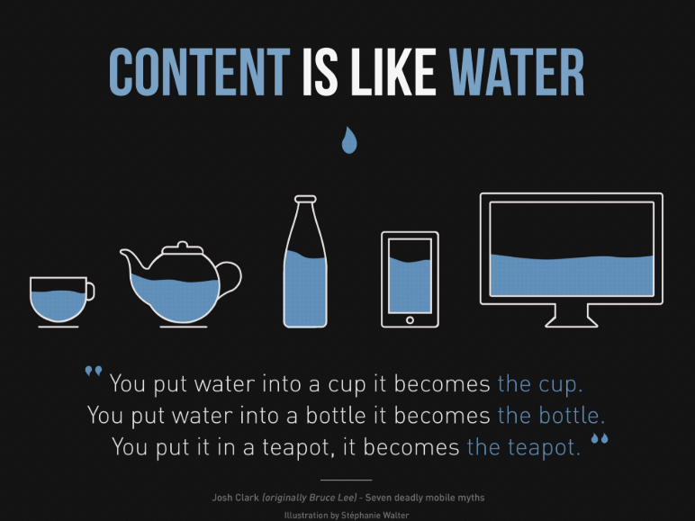
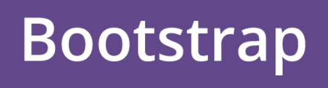

Breakpoints: Hay tres tipos de diseños o layouts a la hora de hacer maquetación web. Fixed: Donde la anchura de la página es fija y es expresada en pixels. Elastic: Donde la anchura de la página es fija y es expresada en la unidad em (múltiplos del tamaño de letra). Fluid/Liquid/Relative: Donde la anchura de la página depende del tamaño del Viewport del usuario y se expresa en porcentajes (%).

El diseño adaptativo ( responsive design) además de adaptación al tamaño implica el cambio en el diseño atendiendo al tamaño de la pantalla del dispostivo. La anchura de la pantalla en la que se produce el cambio es lo que se conoce como Breakpoint. La elección de los breakpoints adecuados no es una tarea fácil pero tomaremos como referencia los de Twitter BootStrap

Los distintos tipos de valores que puedo tener para mediatype son:
En cuanto a las condiciones que puedo consultar:
Esta condiciones se pueden combinar y modificar utilizando claúsulas como: